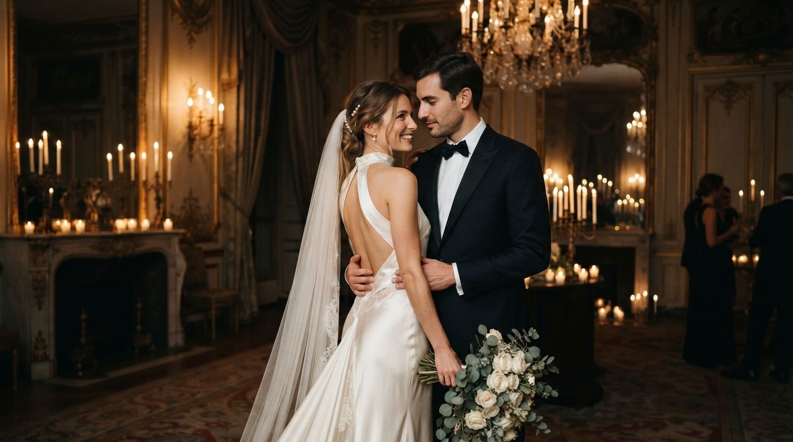
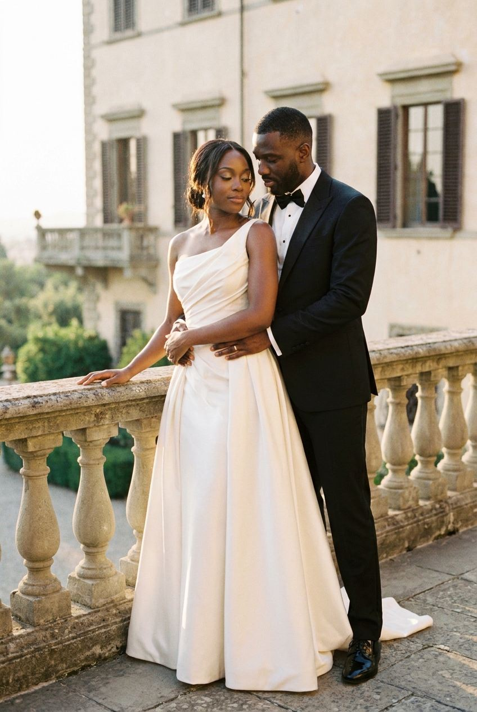
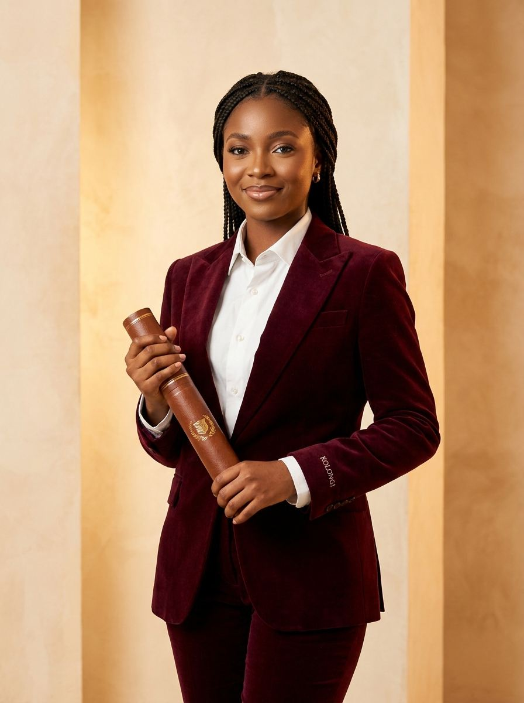

-
01

Ouvrir le modèle →Nocturne
Mariage de soirée · Samuel & Grâce, Paris
Bleu de minuit et cuivre satiné. Le monogramme se trace à l'ouverture, une lueur de bougie suit le curseur, des braises s'élèvent et le programme se dessine comme une constellation.
- Palette
- Typographies
- Bodoni Moda · Jost
-
02
 Ouvrir le modèle →
Ouvrir le modèle →
Jardin
Mariage champêtre · Samuel & Grâce, Provence
Lin, olivier et terre d'argile. Arches provençales, rameau d'olivier qui pousse à l'écran, carte du domaine intégrée et une vigne qui grandit au fil du programme.
- Palette
- Typographies
- Fraunces · Figtree
-
03

Ouvrir le modèle →Magazine
Mariage black tie · Samuel & Grâce, Kinshasa
Une édition spéciale façon magazine de mode : couverture avec masthead, bandeau défilant, édito personnalisé, nuancier type Pantone, portfolio en plein écran et badge VIP.
- Palette
- Typographies
- Playfair Display · Archivo
-
04

Ouvrir le modèle →Lauréate
Collation universitaire · Kahindo Mutombo, UPC
Bordeaux velours et or patiné. L'invité brise un sceau de cire pour ouvrir l'enveloppe à son nom, puis découvre un compte à rebours en anneaux d'or et un billet à liseré doré.
- Palette
- Typographies
- Cormorant Garamond · Manrope · Pinyon Script
-
05
 Ouvrir le modèle →
Ouvrir le modèle →
Atelier
Collation des grades · Kabeya Mukendi Marc, UNIKIN
Esthétique de dossier d'archive : grille suisse, métadonnées en police mono, horloge de Kinshasa en direct, tableau horaire qui signale la séquence en cours et tampon « Confirmé » à la réponse.
- Palette
- Typographies
- Space Grotesk · IBM Plex Mono · Instrument Serif